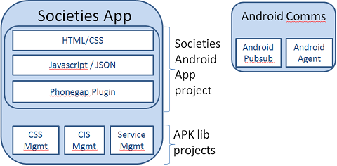

Step-by-step guide - Service Discovery example¶
- Step-by-step guide - Service Discovery example
- Introduction
- Architecture
- Android Parcelable Beans
- Service Interface
- APK Library
- Test Container (optional)
- Phonegap Plugin
- Javascript / JSON
- Referencing your GUI in the main Android project
- Phonegap Desktop mode
Introduction¶
The article is a step by step guide on how to connect the user interface of the SOCIETIES android application to a native component. Although the native component in this example is quite light - it is merely a proxy to the Virgo node - in the future, richer features can be added over time, eg, caching results, offline usage.
This article does not go into low level detail on the technologies used such as Android, Phonegap, inter-process comms on Android such as Intents/AIDL. For detailed articles and troubleshooting, you should read:To implement your own feature in a speedy fashion, you should simply copy each java file mentioned below and edit to your own requirements.
.
Architecture¶
The Android client uses a layered architecture.
- Your features are in a native component and developed as an APK library (APKlib).
- A Phonegap plugin exposes the API of your APKlib to javascript.
- A javascript file will hold a function calling that phonegap plugin with result recieved in a JSON array
- The JSON array is then rendered in a HTML table to the user.
- A seperate application contains the comms services
The example documented is for Service Management. A recordset of 3P services is retrieved from the Virgo node and displayed in a HTML table in the User interface.
.
Android Parcelable Beans¶
All Parcelable beans should be added to the Android API project under the relevant namespace eg, org.societies.android.api.internal.servicelifecycle of the GIT/API/Android/Internal project
Unfortunately, Android requires the use of the Parcelable
interface on objects passed between native components. This is
the Android equivalent of Serialisable. It means the
existing "Schema Beans" cannot be used in their current form.
Developers will need to create an Android version of these beans
that extend their equivalent schema (so you don't need to add all
the properties again!). The recommendation is to prefix your bean
name with the letter 'A' The below example is the AServiceImplementation
bean which implements Parcelable. To save coding each
property again, we simply extend the original ServiceImplementation.
1 public class AServiceImplementation extends ServiceImplementation implements Parcelable {
2 public AServiceImplementation() {
3 super();
4 }
5 }
- Parcelable is not an empty interface like Serialisable.
It does have methods that you need to provide an implementation
for. The method writeToParcel() requires you to write
out each property of your bean (copy/paste from original bean).
1 /* @see android.os.Parcelable#writeToParcel(android.os.Parcel, int) */ 2 public void writeToParcel(Parcel dest, int flags) { 3 dest.writeString(this.getServiceNameSpace()); 4 dest.writeString(this.getServiceProvider()); 5 dest.writeString(this.getServiceVersion()); 6 }
- Private Constructor: You must provide a private
constructor for your bean. The order of setting each property is
important! The properties must match the property order of the writeToParcel()
method
1 private AServiceImplementation(Parcel in) { 2 super(); 3 this.setServiceNameSpace(in.readString()); 4 this.setServiceProvider(in.readString()); 5 this.setServiceVersion(in.readString()); 6 }
- CREATOR: A static creator is required for the Parceling
process. You should add the below boiler plate code from the
AServiceImplementaion class and simply rename to your object
type.
1 public static final Parcelable.Creator<AServiceImplementation> CREATOR = new public static final Parcelable.Creator<AServiceImplementation> CREATOR = new Parcelable.Creator<AServiceImplementation>() { 2 public AServiceImplementation createFromParcel(Parcel in) { 3 return new AServiceImplementation(in); 4 } 5 public AServiceImplementation[] newArray(int size) { 6 return new AServiceImplementation[size]; 7 } 8 };
- If your bean uses other beans from your namespace, eg, Service has a property ServiceResourceIdentifier, then that other bean also needs to be added to the Android API folder and implement Parcelable. Follow the above steps for each bean. You should see the ServiceLifecycle folder for examples to follow.
.
Service Interface¶
Add the interface of your service to the Android API project. In this example, the IServiceDiscovery interface was added to the API/Android/Internal project.
- List the methods of your interace in a array object.
Required for Android's Intent system (inter-process
comms)
1 public String methodsArray[] = { 2 "getServices(String client, String identity)", 3 "searchService(String client, Service filter, String identity)" };
- You cannot reuse the interface from Virgo as the first
parameter of each method is the client component package that is
calling this method. Also, the return type needs to be the
Parcelable object created earlier, eg, AService not Service.
You should return an array object not List as this will be
easier when it comes to converting to a JSON array later.
1 Gets list of 3rd party services available from a CSS or CIS 2 @param client component package calling this method 3 @param identity The target node where search is to occur 4 5 public AService[] getServices(String client, String identity);
.
APK Library¶
A seperate project is required for each API Lib, SocietiesServiceMonitor is the API lib for this example. The ServiceManagement class implements the IServiceDiscovery interface
- Update your NAMESPACE and PACKAGES and new ELEMENT required for communications
- Implement the methods of your interface
- As communication with Virgo is asynchronous, your results will arrive in the Callback object
- After processing your MessageBeanResult object, you need to notify your caller that the results are now ready.
- What was returned from the MessageBeanResult is the
"Schema Bean". You cannot send this up the stack. You must
convert it your Parcelable equivalent object type.
1 //GET SCHEMA BEAN RESULT 2 ServiceDiscoveryResultBean discoResult = (ServiceDiscoveryResultBean) msgBean; 3 List<Service> serviceList = discoResult.getServices(); 4 //CONVERT TO PARCEL BEANS 5 int i=0; 6 AService serviceArray[] = AService.CREATOR.newArray(serviceList.size()); 7 for(Service tmpService: serviceList) { 8 serviceArray[i] = (AService)tmpService; 9 i++; 10 } - Add the return object of your service interface method
(ie, AService[] getServices() ) into the return intent.
In this case, I add the AServices[] object.
1 //NOTIFY CALLING CLIENT 2 intent.putExtra(INTENT_RETURN_VALUE, (Parcelable) serviceList); 3 intent.setPackage(client); 4 ServiceManagement.this.sendBroadcast(intent);
- You need to add your service advertisement to the
AndroidManifest.xml
1 <service android:name="org.societies.android.platform.servicemonitor.ServiceManagement" />
.
Test Container (optional)¶
Before creating the Phonegap plugin, you should ensure that your service is working correctly by creating a testing container that consumes the API of your service. This will make development easier, as if problems arrive with your UI, debugging through the Javascript -> Phonegap plugin -> your Service will prove complicated (not impossible). So if bugs can be found at this stage, it will make troubleshooting later much easier.
Create a standard android application. You should name it TestContainer***. For this example, refer to the TestContainerSLM
.
Phonegap Plugin¶
All the phonegap plugins are located in the new Societies Android App project, under the org.societies.android.platform.phongegap namespace. Each component's plugin gets its own class. Service Discovery uses the PluginCoreServiceMonitor
Add class level variables for:- service you are comsuming, eg, IServiceDisco
- boolean tracking if you service is connected,
1 public class PluginCoreServiceMonitor extends Plugin { 2 private IServiceDiscovery serviceDisco; 3 private boolean serviceDiscoConnected = false;
- Implement the Service Connection interface for your
service
1 /**IServiceDiscovery service connection*/ 2 private ServiceConnection serviceDiscoConnection = new ServiceConnection() { 3 4 public void onServiceConnected(ComponentName name, IBinder service) { 5 LocalBinder binder = (LocalBinder) service; 6 //OBTAIN SERVICE DISCOVERY API 7 serviceDisco = (IServiceDiscovery) binder.getService(); 8 serviceDiscoConnected = true; 9 } 10 public void onServiceDisconnected(ComponentName name) { 11 serviceDiscoConnected = false; 12 } 13 };
- In the IntialiseServiceBinding() method, you
must bind to your target service and register the methods you
will send return values from
1 private void initialiseServiceBinding() { 2 //CREATE INTENT FOR EACH SERVICE 3 Intent intentServiceDisco = new Intent(this.ctx.getContext(), ServiceManagement.class); 4 this.ctx.getContext().bindService(intentServiceDisco, serviceDiscoConnection, Context.BIND_AUTO_CREATE); 5 6 //REGISTER BROADCAST 7 IntentFilter intentFilter = new IntentFilter() ; 8 intentFilter.addAction(ServiceManagement.GET_SERVICES); 9 intentFilter.addAction(ServiceManagement.SEARCH_SERVICES); 10 11 this.ctx.getContext().registerReceiver(new bReceiver(), intentFilter); 12 }
- The action parameter contains your method, so you need to check which method is being invoked. ServiceMethodTranslator is provided utitility to extract the method name from the array of methods you specified in your Interface
- The data JSON array contains the parameters for
your method and will need to be extracted
1 if (action.equals(ServiceMethodTranslator.getMethodName(IServiceDiscovery.methodsArray, 0))) { 2 try { 3 this.serviceDisco.getServices(data.getString(0), data.getString(1) ); 4 } catch (JSONException e) { 5 e.printStackTrace(); 6 }
- Check which method is being returned. This will allow
you to convert to the correct return type
1 /**Broadcast receiver to receive intent return values from service method calls*/ 2 private class bReceiver extends BroadcastReceiver { 3 4 @Override 5 public void onReceive(Context context, Intent intent) { 6 if (intent.getAction().equals(ServiceManagement.GET_SERVICES)) { 7 //...
- The returned values are stored in Parcelable
arrays and need to be cast to a JSON object that can be
processed by Javascript. A utility function convertToJSONArray()
will help you convert any object to JSON format.
1 //UNMARSHALL THE SERVICES FROM Parcels BACK TO Services 2 Parcelable parcels[] = intent.getParcelableArrayExtra(ServiceManagement.INTENT_RETURN_VALUE); 3 Service services[] = new Service[parcels.length]; 4 for (int i = 0; i < parcels.length; i++) { 5 services[i] = (org.societies.api.schema.servicelifecycle.model.Service) parcels[i]; 6 } 7 PluginResult result = new PluginResult(PluginResult.Status.OK, convertToJSONArray(services)); 8 PluginCoreServiceMonitor.this.success(result, methodCallbackId);
.
The plugin must also be registered on the plugins.xml file of the SocietiesAndroidApp
1 <plugins> 2 <plugin name="App" value="org.apache.cordova.App"/> 3 <plugin name="Geolocation" value="org.apache.cordova.GeoBroker"/> 4 <plugin name="Device" value="org.apache.cordova.Device"/> 5 <plugin name="Accelerometer" value="org.apache.cordova.AccelListener"/> 6 <plugin name="Compass" value="org.apache.cordova.CompassListener"/> 7 <plugin name="Media" value="org.apache.cordova.AudioHandler"/> 8 <plugin name="Camera" value="org.apache.cordova.CameraLauncher"/> 9 <plugin name="Contacts" value="org.apache.cordova.ContactManager"/> 10 <plugin name="File" value="org.apache.cordova.FileUtils"/> 11 <plugin name="NetworkStatus" value="org.apache.cordova.NetworkManager"/> 12 <plugin name="Notification" value="org.apache.cordova.Notification"/> 13 <plugin name="Storage" value="org.apache.cordova.Storage"/> 14 <plugin name="Temperature" value="org.apache.cordova.TempListener"/> 15 <plugin name="FileTransfer" value="org.apache.cordova.FileTransfer"/> 16 <plugin name="Capture" value="org.apache.cordova.Capture"/> 17 <plugin name="Battery" value="org.apache.cordova.BatteryListener"/> 18 <plugin name="SplashScreen" value="org.apache.cordova.SplashScreen"/> 19 <plugin name="ConnectionPlugin" value="org.societies.cft.ConnectionPlugin"/> 20 <!-- Societies Android plugins --> 21 <plugin name="PluginCoreServiceMonitor" value="org.societies.android.platform.phongegap.PluginCoreServiceMonitor"/> 22 <plugin name="PluginCSSManager" value="org.societies.android.platform.phongegap.PluginCSSManager"/> 23 <plugin name="PluginPreferences" value="org.societies.android.platform.phongegap.PreferencesPlugin"/> 24 25 </plugins>
Javascript / JSON¶
All the javascript required for you to interface with your phonegap plugin should be located in a seperate javascript file. For this example all javascript is in ServiceManagement.js located in the /Assets/www/javascript/pagespecific folder of the new Soceities Android App project.
Before you can invoke a phonegap plugin, you must first connect to it. And for connecting you should create one more javascript which will act as the connector between the javascript and your plugin. You will create it at the javascript/plugins folder There you have to implement the connect function like the one below and which can be found here
- Our program flow is to call the connectToCoreServiceMonitor() method, which will call the connectService: function(successCallback, failureCallback) on the same javascript, and the second function is the one really connecting the javascript with the phonegap plugin. If successfull, the success() function is invoked, it will call the action function passed as input. In this case it will be the getServices() javascript method, defined on the pagespecific javascript and glued in the html button through the jquery code in the end of the servicemanagement.js file. This connecting function would always be called before invoking any of our native components service methods and can be re-used.
Top connect function (on coreservicemonitor_plugin.js)
1 /** @description Connect to Service Monitor service
2 * @param {Object} function to be executed if connection successful
3 */
4 connectToCoreServiceMonitor: function(actionFunction) {
5 window.plugins.CoreServiceMonitorService.connectService(success, failure); // call to bottom connect function
6
7 function success(data) {
8 actionFunction();
9 }
10
11 function failure(data) {
12 alert("connectToCoreServiceMonitor - failure: " + data);
13 }
14 }
Bottom connect function (still on coreservicemonitor_plugin.js)
Notice
below that the PluginCoreServiceMonitor correspond to the name of
your android implementation of the phonegap plugin PluginCoreServiceMonitor and connectService
to the action being invoked there.
1 /**
2 * @methodOf SocietiesCoreServiceMonitor#
3 * @description Connects the GUI to native service implementation
4 * @param {Object} successCallback The callback which will be called when result is successful
5 * @param {Object} failureCallback The callback which will be called when result is unsuccessful
6 * @returns null
7 */
8 connectService: function(successCallback, failureCallback) {
9
10 console.log("Call CoreServiceMonitorService - connectService");
11
12 return cordova.exec(successCallback, //Callback which will be called when plugin action is successful
13 failureCallback, //Callback which will be called when plugin action encounters an error
14 'PluginCoreServiceMonitor', //Telling PhoneGap that we want to run specified plugin
15 'connectService', //Telling the plugin, which action we want to perform
16 []); //Passing a list of arguments to the plugin
17 },
- Assuming a successful connection, here is where we call
our service and populate the table with the list of returned
services from the getServices() method.
1 /**@description Refresh the Services page with list of 3P Services */ 2 refresh3PServices: function() { 3 function success(data) { 4 //empty table 5 jQuery('#societiesServicesTable tbody').remove(); 6 //SERVICE 7 for (i = 0; i < data.length; i++) { 8 var tableEntry = "<tr>" + 9 "<td>" + data[i].serviceName + "</td>" + 10 "<td>" + data[i].serviceDescription + "</td>" + 11 </tr>" 12 jQuery('#societiesServicesTable').append(tableEntry); 13 } 14 } 15 16 function failure(data) { 17 alert("refresh3PServices - failure: " + data); 18 } 19 20 window.plugins.CoreServiceMonitorService.getServices(success, failure); 21 } 22
- Within the HTML of the Apps page of the user
interface, there is a button called List3PServices and
a table called societiesServicesTable
1 <button id="List3PServices" value="Get Services"/> 2 <table id="societiesServicesTable"> </table>
- Attaching an event to the button that lists our services
is done in our javascript. First we call the connect method and
pass in the method we want invoked if successfull.
1 $('#List3PServices').click(function() { 2 SocietiesGUI.connectToCoreServiceMonitor(SocietiesGUI.refresh3PServices);; 3 });
.
Referencing your GUI in the main Android project¶
Below are the steps to "glue" your gui in the Main Android Project
You must register your plugin API (the one located in the javascript/plugins folder on the
onDeviceReady: function() at the mainpage.js as below
1 console.log("Register CoreServiceMonitorService plugin ");
2 cordova.addPlugin('SocietiesCoreServiceMonitor', SocietiesCoreServiceMonitor);
Phonegap Desktop mode¶
Phonegap Desktop allows you to emulate a call to your native service without leaving the javascript. This allows you to have a seperate method that returns a JSON array of results that will allow you to check the formatting of your HTML. This can all be accomplished within the browser removing the need to compile, deploy and running the Android emulator. This significantly increases the development time.
In this example, you should check the /phonegapdesktop/pluginjs folder.- Create a JSON file which contains the result of your call, see ServiceManagement.json
- Create a new javascript plugin file that will return this recordset instead of connecting to your actual phonegap plugin
- In the index HTML page, comment the phonegap
javscript file and un-comment the phonegap-desktop.js file.
There are instructions in each file
1 <!-- PhoneGap plugins --> 2 <script type="text/javascript" charset="utf-8" src="cordova-1.7.0.js"></script> 3 <script type="text/javascript" src="javascript/plugins/coreservicemonitor_plugin.js"></script> 4 5 <!-- Uncomment line below to enable PhoneGap desktop and comment out real PhoneGap jS library--> 6 <!-- 7 script type="text/javascript" charset="utf-8" src="javascript/phonegapdesktop/phonegap-desktop.js"></script> 8 <script type="text/javascript" charset="utf-8" src="javascript/phonegapdesktop/pluginjs/servicemanagement.js"></script> 9 -->